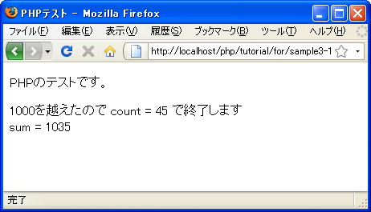

break
繰り返し処理の中でbreakが実行されると繰り返し処理が終了させることができます。breakは繰り返し処理であるwhile文などの他にswitch文でも使用されます。
break;
例えば次のように使います。
$count = 1;
$sum = 0;
while ($count <= 100){
$sum += $count;
if ($sum > 1000){
print '1000を越えたので count = '.$count.' で終了します';
break;
}
$count += 1;
}
// breakが実行された時に処理が移る位置
print 'sum = '.$sum;
上記では変数の値を1から100まで変化させ合算した結果を表示するものです。while文のブロックの中で、合算した値が1000を越えた場合にbreakを実行します。すると処理はwhile文を終了して次の処理へ移ります。
このようにbreakを使用することで任意のタイミングでwhile文を抜け出させることが可能となります。
抜ける繰り返し処理の階層を指定
breakはデフォルトでは一番内側のwhile文を抜けて次の処理へ移ります。breakがネストされた繰り返し処理の中に記述されている場合は、抜けたい階層の数を指定できます。
次の例を見てください。
$i = 1;
while ($i < 5){
$j = 1;
whike ($j < 5){
if ($i * $j > 15){
break;
}
$j += 1;
}
// breakが実行された時に処理が移る位置
$i += 1;
}
この場合、内側のwhile文の中で変数「i」と変数「j」を乗算し15を超えた場合はbreakを実行しています。デフォルトではbreakは、breakが記述された一番内側の繰り返し処理を抜けるため、breakが実行されても内側のwhile文だけを抜けることになります。
breakには空白を1文字あけて数値を記述すると、何階層抜け出るかを指定することができます。
break 階層数;
抜け出したい階層の数を指定します。
次の例を見てください。
$i = 1;
while ($i < 5){
$j = 1;
whike ($j < 5){
if ($i * $j > 15){
break 2;
}
$j += 1;
}
$i += 1;
}
// breakが実行された時に処理が移る位置
今回の例ではbreakが実行された時に2階層分の繰り返し処理を抜け出しますので、外側のwhile文の後へ処理が移ることになります。
このようにbreakを使えば繰り返し処理の中で強制的に抜け出すことが出来るだけではなく、何階層抜け出るのかを指定することも可能です。
サンプルプログラム
では簡単なプログラムで試して見ます。
<!DOCTYPE html PUBLIC "-//W3C//DTD XHTML 1.0 Transitional//EN"
"http://www.w3.org/TR/xhtml1/DTD/xhtml1-transitional.dtd">
<html xmlns="http://www.w3.org/1999/xhtml" xml:lang="ja" lang="ja">
<head>
<meta http-equiv="Content-Type" content="text/html;charset=UTF-8" />
<title>PHPテスト</title>
</head>
<body>
<p>PHPのテストです。</p>
<p>
<?php
$count = 1;
$sum = 0;
while ($count <= 100){
$sum += $count;
if ($sum > 1000){
print '1000を越えたので count = '.$count.' で終了します<br />';
break;
}
$count += 1;
}
print 'sum = '.$sum;
?>
</p>
</body>
</html>
上記のファイルをWWWサーバのドキュメントルート以下に設置しブラウザからアクセスすると次のように表示されます。

( Written by Tatsuo Ikura )

著者 / TATSUO IKURA
初心者～中級者の方を対象としたプログラミング方法や開発環境の構築の解説を行うサイトの運営を行っています。